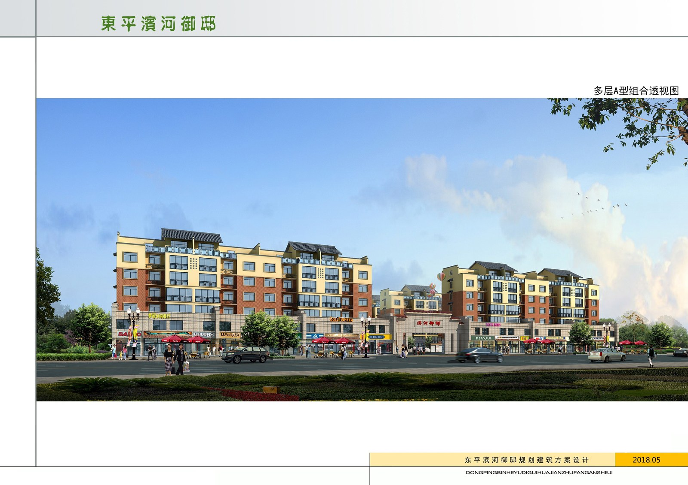
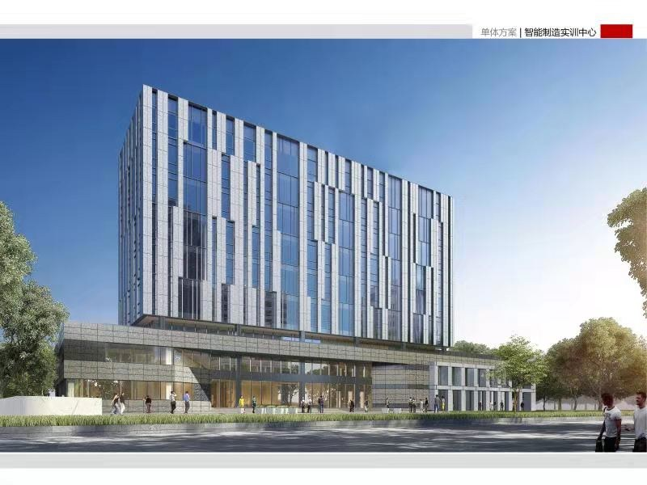
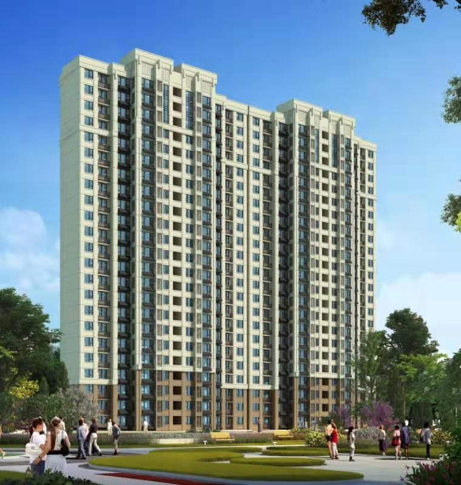

十三年深耕工程建设，以数智化驱动高质量发展

山东建业建设发展集团成立于 2013 年 11 月，致力于打造成为集前期咨询、工程建设、后期运维为一体的工程建设领域综合服务商。公司业务涵盖：工程监理与全过程工程咨询、招标代理与政府采购代理、造价咨询与跟踪审计、工程总承包与施工总承包、工程测绘、前期咨询与评估；同时开展工程质量检测业务，资产评估、财务审计由合作机构共同开展。
公司是山东省建设监理与咨询协会副会长单位、泰安市建设监理协会会长单位、泰安市土木建筑学会副会长单位、泰安市人民防空协会副会长单位，在区域行业内具有较强影响力与号召力。
公司现有员工 200 余人，大专以上学历占 90%。其中高级工程师 35 人、中级工程师 50 人、助理工程师 60 人；注册造价工程师 10 人、注册一级建造师 15 人、注册二级建造师 26 人、注册监理工程师 48 人。公司人员持证上岗率 95% 以上，拥有一批工程经验丰富、懂技术、善管理、责任心强的高素质青年人才。
公司通过了 ISO9001 质量管理、ISO14001 环境管理、ISO18001 职业健康安全管理体系认证，先后多次荣获“山东省先进企业”“泰安市先进企业”“山东省抗击新冠疫情先进企业”等荣誉称号；管理的工程荣获多项“泰山杯”“山东省优质结构工程奖”“山东省安全文明标准化示范工地”“泰安市优质结构工程奖”。
公司积极参与制定国家、行业、地方、团体标准，成为行业标准“领跑者”。现有国家发明专利、实用新型专利 44 项，2023 年荣获国家级高新技术企业、国家级科技型中小企业、山东省创新型中小企业、山东省专精特新企业等称号，2024 年被认定为市级企业技术中心，2025 年再次入库国家级科技型中小企业，并荣获山东省建筑业 2025 年第一批“齐鲁建造”品牌。







公司坚持“坚定不移的走出去”战略，目前已在青岛、济南、新疆、广西、海南等多地设立子公司、分公司，在全国开展业务，取得了良好的经济效益和社会效益。通过持续的锻炼和培养，成功打造了一批政治立场坚定、能力卓越、有专业水平的管理团队。
设立分公司，服务省会及周边工程建设市场
设立分公司，深耕胶东半岛工程咨询市场
岳普湖县改造提升高标准农田建设项目造价咨询
崇左市宁明县耕地提质改造（旱改水）EPC 工程总承包
设立子公司，拓展自贸港工程建设与咨询业务